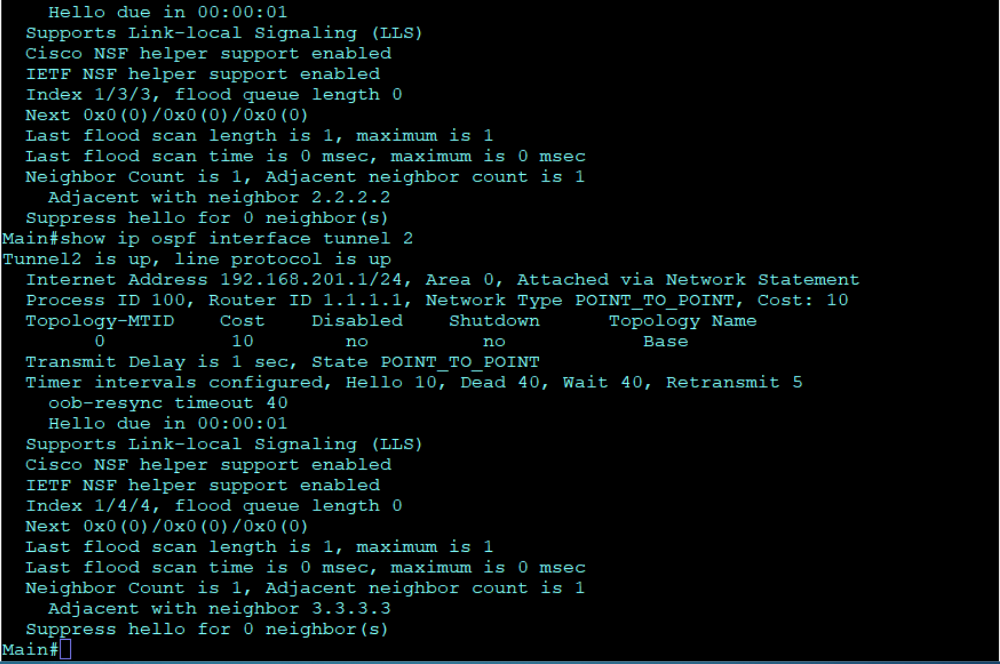
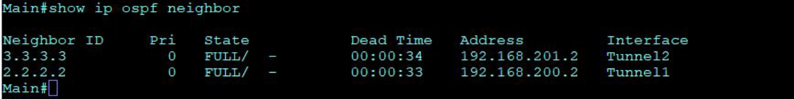
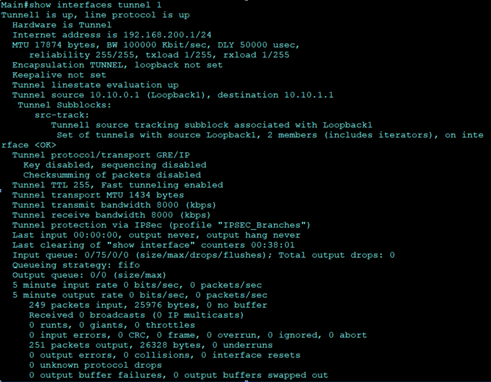
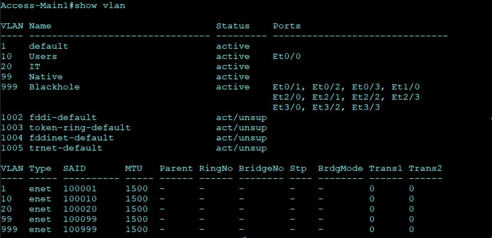

theme: black
highlightTheme: monokaiתכנון והקמה של מודל של רשת ארגונית
מאייר שטרקמן
Topology

feature OSPF (Open Shortest Path First)
פרוטוקול ניתוב שעוזר לראוטרים לשמור על עדכניות בכל הקשור לנתיבים ברשת. בעזרת חבילות hello ו- LSAs
(מודעות מצב קישור), הראוטרים "מדברים" אחד עם השני ומעדכנים על שינויים או מצבים חדשים. כל זה עוזר לכל ראוטר לדעת מי השכנים שלו ואיך להגיע אליהם הכי מהר.
הפרוטוקול ממש מועיל לרשתות בסניפים שונים שרוצות לדבר זו עם זו בצורה ישירה וללא עיכובים.
Configuration Example - Main Router
Router ospf 100
Router-id 1.1.1.1
Network 192.168.0.0 0.0.0.255 area 0
show OSPF


feature GRE Over IPsec Tunnel
מנהרת GRE מאפשרת עטיפה (encapsulation) של חבילות נתונים, כך שסניפים מרוחקים נראים כאילו הם מחוברים ישירות לרשת מקומית, ולא עוברים דרך רשתות WAN כמו האינטרנט.
השימוש במנהרת GRE מאפשר הפעלת פרוטוקולי ניתוב נוספים שלא היו יכולים לפעול ברשתות WAN. כדי להתמודד עם העובדה ש-GRE לא מספק אבטחה, משתמשים ב-IPsec להוספת שכבת הצפנה (encryption) ולשמירה על ביטחון הנתונים.
באמצעות פרוטוקולים כמו IKE ו-ESP, IPsec מבטיח שכל חבילה שעוברת דרך המנהרה תהיה גם עטופה וגם מוצפנת, מה שמגן על המידע ושומר עליו חסוי.
show GRE Over IPsec Tunnel

feature VLAN
טכנולוגיה שמאפשרת יצירת רשתות לוגיות נפרדות בתוך מתג פיזי אחד. שימוש -**VLAN** בטופולוגיה שלנו מקטין את ה-broadcast domain, כך שחבילות broadcast מוגבלות רק ל-VLAN שלהן. זה משפר את ביצועי הרשת על ידי הפחתת כמות התעבורה הלא נחוצה.
בנוסף, VLAN משמש להפרדה בין תעבורת ניהול לתעבורת משתמשים, מה שמגביר את אבטחת הרשת.
דוגמה להגדרות ליצירת VLAN:
Vlan 10
Name users
שיוך פורטים ל-VLAN:
Switchport mode access
Switchport access vlan 10
show Vlan

feature Trunk Configuration
לאפשר מעבר נתונים למספר VLANs, מגדירים את הפורט כ-trunk באמצעות הפקודה:
Switchport mode trunk
לבחירת אילו VLANs יוכלו לעבור דרך הפורט, משתמשים בפקודה:
Switchport trunk allowed vlan 10,20,99
בנוסף, קובעים את ה-VLAN המוגדר כברירת מחדל (native VLAN) באמצעות:
Switchport trunk native vlan 99
show Trunk Configuration

feature Subinterfaces
כדי לייעל את התקשורת בין VLANs שונים בפרויקט שלנו, נעשה שימוש בראוטר שמסוגל לנתב חבילות בין VLANs באמצעות תתי-ממשקים (Subinterfaces). במקום להקצות חיבור פיזי נפרד לכל VLAN, יצרנו מספר תתי-ממשקים על גבי פורט פיזי יחיד בראוטר. כל תת-ממשק משויך ל-VLAN ספציפי ומאפשר מעבר נתונים יעיל דרך חיבור trunk יחיד במתג. גישה זו חוסכת משאבים ומפשטת את הניהול, תוך שמירה על הפרדה לוגית ואבטחת מידע בין ה-VLANs.
דוגמה להגדרות:
Interface ethernet0/1.10
Encapsulation dot1q 10
Ip address 192.168.1.1 255.255.255.128
feature Spanning-Tree Protocol (STP)
פרוטוקול STP נועד לזהות ולמנוע לולאות ברשת על ידי כיבוי פורטים שעלולים לגרום להן. גרסאות מתקדמות כמו PVST ו-RPVST מאפשרות להגדיר root bridge נפרד לכל VLAN, מה שמייעל את ניהול התעבורה.
במקום שכל החבילות מכל ה-VLANs יעברו דרך root bridge יחיד, השימוש ב-PVST מאפשר חלוקה חכמה של העומסים, כך ש-VLAN 10 ינותב דרך D1, ו-VLAN 20 ינותב דרך D2. יתרון נוסף הוא האפשרות להפעיל את ההגדרה portfast, שמאיצה את מעבר הפורט למצב forwarding ללא עיכובים במצבי learning ו-listening.
.
הגדרות PVST:
Spanning-tree mode pvst
Spanning-tree vlan 10 priority 8192
Spanning-tree vlan 20 priority 4096
show Spanning-Tree


security feature SSH Configuration
SSH הוא פרוטוקול לקונפיגורציה מרחוק של מכשירים כמו ראוטרים או מתגים. שימוש ב-SSH בטופולוגיה מאפשר לנהל את המכשירים מרחוק ולבצע שינויים בהגדרות באופן בטוח.
הגדרות:
Ip domain-name project.com
Crypto key generate rsa general-keys modulus 2048
Username manager secret Proman1998!
Ip ssh version 2
show SSH


feature Port Channel
טכנולוגיה שמאפשרת איחוד של מספר חיבורים פיזיים לחיבור לוגי אחד, מה שמגדיל את ה-bandwidth ויוצר redundancy. בטופולוגיה נעשה שימוש בפרוטוקולים כדי לחבר בין מתגים בסניף הראשי. במצב של כשל באחד הפורטים, החיבורים הנותרים ימשיכו לפעול כרגיל, מה שמבטיח אמינות וביצועים גבוהים. נבחר LACP מכיוון שהוא פרוטוקול סטנדרטי ופתוח לשימוש על ידי כל החברות, מה שמבטיח תאימות רחבה בין ציוד של יצרנים שונים.
הגדרות:
Interface range e0/1-3
Channel-group 1 mode active
show Port Channel

feature DHCP Configuration
פרוטוקול לשיוך כתובות IP דינאמיות. בטופולוגיה שלנו, שרת ה-DHCP נמצא בראוטר בכל סניף ומוגדר לחלק כתובות לשני VLANs מ-2 pools של כתובות. הוגדרו גם כתובות שמורות בשביל הראוטרים שמשתמשים בכתובות סטטיות.
הגדרות:
Ip dhcp excluded-address 192.168.0.1 192.168.0.5
Ip dhcp pool Main_Users
Network 192.168.0.0 255.255.255.128
Default-router 192.168.0.1
show DHCP


security feature Port Security
פיצ’ר בשכבה 2 שמאפשר לגרום לפורט להיכבות אם מתגלה הפר בטופולוגיה שלנו, הפיצ'ר מוגדר כך שפורטים במתג יכובו אם עברו יותר משתי כתובות MAC בזמן מסוים. כך נמנע MAC address flooding attack שגורמת לטבלה במתג להיות מלאה ולשלוח חבילות כ-unknown unicast flooding.
הגדרות:
Interface e0/0
Switchport port-security maximum 2
Switchport port-security violation shutdown
Switchport port-security aging time 5
Switchport port-security aging type inactivity
show Port Security

security feature DHCP Snooping
נועד למנוע מתקפות של man in the middle attack או DHCP Spoofing. הפיצ'ר מופעל במתגים כדי למנוע משרת DHCP מתחזה לחלק כתובות IP שגויות או לפרסם את התוקף בתור default gateway, ובכך לגרום למתקפות. הפיצ'ר הופך את כל הפורטים במתג ל-untrusted ובודק כל סוג חבילת DHCP, כך שמחליט אם יכולה לעבור או שתיחסם.
הגדרות:
Ip dhcp snooping
Ip dhcp snooping vlan 10
show DHCP Snooping


security feature ACL Configuration
דרך להגדיר בשכבה 3 מי יכול לעבור ומי לא. בטופולוגיה קיים standard ACL שחוסם את כל הכתובות ב VLAN users שלא יעברו חבילות למכשירי הרשת עצמם כמו חבילות SSH, ומתיר לכתובות ב VLAN IT לשלוח
הגדרות:
Ip access-list standard ALLOW_VTY_ACCESS
Permit 192.168.1.128 0.0.0.127 host 192.168.1.129
show ACL Configuration

security feature Password Management and Encryption
כדי לאבטח מכשיר בין אם בחיבור פיזי או מרחוק צריך סיסמאות. בשביל console port וגם vty השתמשנו בשם משתמש וסיסמא עם הפקודה או עם שרת AAA.
הגדרות:
/```
Username manager secret Proman1998!
Login local - שמבקשת מהמכשיר לאמת לפי שם משתמש וסיסמא שהוגדרו.
Service password-encryption - מצפין את כל הסיסמאות שמופיעות ב-clear text.
Enable secret Ccnpdev24! - קובע סיסמא נוספת למצב Privileged EXEC.
/```
show Password Management and Encryption
// Include screenshots or output data
security feature Line VTY and Console
בנוסף לסיסמאות שהוזכרו, ישנן הגדרות נוספות שכדאי להוסיף לחיבורים האלה כדי להגביר את האבטחה.
Console line:
Line console 0
Login local - כדי להשתמש בסיסמא ושם משתמש שמוגדרים מקומית.
Access-class 10 in - משייך ACL כדי להגביל גישה.
Exec-timeout 5 0 - מנתק את המשתמש אחרי 5 דקות של חוסר פעילות.
Login block-for 120 attempts 3 within 180 - חוסם את המשתמש ל-2 דקות אם הכניס סיסמא שגויה בתוך 3 דקות אחרי 3 ניסיונות.
Line VTY:
Line vty 0 15
Transport input ssh - מוודא שהחיבור המרוחק מאובטח ולא עובר ב-clear text.
Login local
Exec-timeout 5 0
Access-class 10 in
Login block-for 120 attempts 3 within 180
security feature BPDU Guard
כפי שהוזכר בשקופית בנושא STP, יש אפשרות להגדיר portfast כדי להאיץ את חיבור ה-end devices. אך אם מחברים switch לפורט שהוגדר ב-portfast, עלול להיווצר מצב של broadcast storm. כדי למנוע זאת, מוגדר BPDU guard, שמוודא שהמכשיר שמחובר לפורט הוא לא מתג. אם הפורט מקבל BPDU (חבילה שמתגים שולחים ביניהם), הפורט ייכנס למצב error disabled ויחסום את כל מה שינסה לעבור.
הגדרות:
Spanning-tree portfast bpduguard enable
show BPDU Guard

security feature Unused Switchports
מומלץ בתור best practice לכבות פורטים שלא מחוברים לכלום ולשים אותם ב-VLAN נפרד שנקרא blackhole.
הגדרות:
Interface range e0/5 - 24
Vlan 999
Name blackhole
Switchport mode access
Switchport access vlan 999
Spanning-tree bpduguard enable
אבטחת Native VLAN:
Switchport trunk native vlan 99 - שינוי ה-native vlan מהמספר הדיפולטיבי שהוא 1.
Automation with Ansible
בחרנו להשתמש ב-Ansible כי לא צריך להתקין agent על כל המכשירים כמו ב-Chef או Puppet. Ansible עובד בשיטת push, שמעביר פקודות לכל הכתובות בקובץ ה-inventory לפי ה-playbook דרך פרוטוקול SSH שכבר קיים על כולם.
Tasks in Playbook:
- Run 'show run' command - עוברים על כל מכשיר בטופולוגיה ורושמים את הפקודה
show run. - Save command output to a file - שומרים את הפלט בתוך קובץ עם
hostnameשל כל מכשיר.